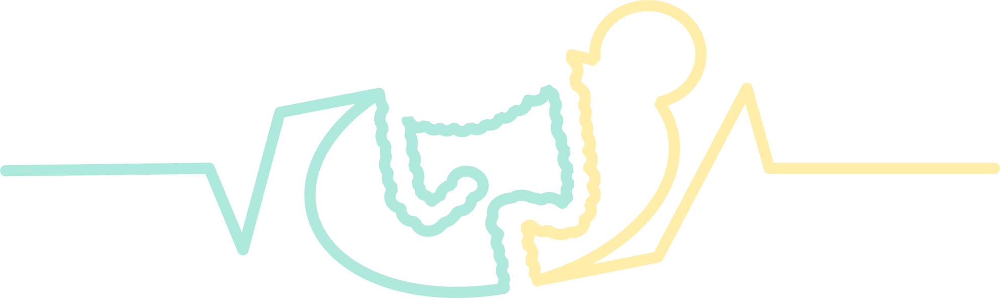

<!--<div class="mynav">-->

<!--<nav class="navbar navbar-expand-md navbar-dark bg-dark">-->
<button class="navbar-toggler" type="button" data-toggle="collapse" data-target="#collapsibleNavbar">
  <span class="navbar-toggler-icon"></span>
</button>
<div class="navbar-collapse collapse justify-content-around" id="collapsibleNavbar">
  <!-- This was part of the above class, what does this do Cecilia? "w-100 order-1 order-md-0 dual-collapse2"-->
  <ul class="navbar-nav align-items-center">
    <li class="nav-item dropdown">
      <a class="nav-link dropdown-toggle" href="#" id="navbardrop-hp" data-toggle="dropdown">
        HUMAN PRACTICES
      </a>
      <div class="dropdown-menu">
        <a class="dropdown-item" href="Human_Practices.html">Human Practices</a>
        <a class="dropdown-item" href="Human_Practices.html#Integrated">Integrated Human Practices</a>
        <a class="dropdown-item" href="Collaborations.html">Collaborations</a>
      </div>
    </li>

    <li class="nav-item dropdown">
      <a class="nav-link dropdown-toggle" href="#" id="navbardrop-project" data-toggle="dropdown">
        PROJECT
      </a>
      <div class="dropdown-menu">
        <a class="dropdown-item" href="Description.html">Project description</a>
        <a class="dropdown-item" href="Detection.html">Detection</a>
        <a class="dropdown-item" href="Monitoring.html">Monitoring</a>
        <a class="dropdown-item" href="Treatment.html">Treatment</a>
        <a class="dropdown-item" href="Interlab.html">Interlab</a>
      </div>
    </li>
    <li class="nav-item dropdown">
      <a class="nav-link dropdown-toggle" href="#" id="navbardrop-project" data-toggle="dropdown">
        MODELLING
      </a>
      <div class="dropdown-menu">
        <a class="dropdown-item" href="Model.html">Kinetic models</a>
        <a class="dropdown-item" href="Model.html#GEM">Genome scale models</a>
      </div>
    </li>
  </ul>
  <a class="navbar-brand" href="Main.html">
    
  </a>
  <ul class="navbar-nav ml-auto">
    <li class="nav-item dropdown">
      <a class="nav-link dropdown-toggle" href="#" id="navbarDropdown" role="button" data-toggle="dropdown" aria-haspopup="true" aria-expanded="false">
          TEAM
        </a>
      <div class="dropdown-menu" aria-labelledby="navbarDropdown">
        <a class="dropdown-item" href="Team.html">Team</a>
        <a class="dropdown-item" href="Supervisors.html">Supervisors</a>
        <a class="dropdown-item" href="Sponsors.html">Sponsors</a>
        <a class="dropdown-item" href="Attributions.html">Attributions</a>
      </div>
    </li>
    <li class="nav-item dropdown">
      <a class="nav-link dropdown-toggle" href="#" id="navbardrop-achievements" data-toggle="dropdown">
        ACHIEVEMENTS
      </a>
      <div class="dropdown-menu">
        <a class="dropdown-item" href="Results.html">Project results</a>
        <a class="dropdown-item" href="Parts.html">Parts</a>
      </div>
    </li>
    <li class="nav-item dropdown">
      <a class="nav-link dropdown-toggle" href="#" id="navbardrop-notebook" data-toggle="dropdown">
        NOTEBOOK
      </a>
      <div class="dropdown-menu">
        <a class="dropdown-item" href="Lab_journal.html">Lab journal</a>
        <a class="dropdown-item" href="Lab_journal.html#Protocols">Protocols</a>
        <a class="dropdown-item" href="Lab_journal.html#Safety">Safety</a>
      </div>
    </li>
  </ul>
</div>
<!-- </nav>-->
<!-- </div>-->